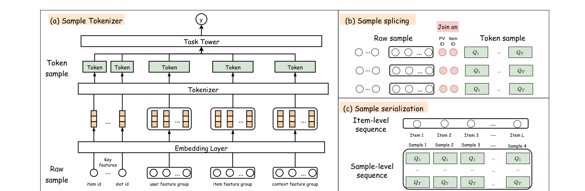
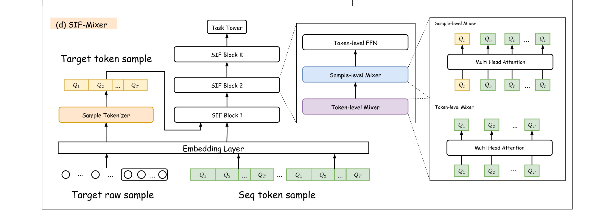
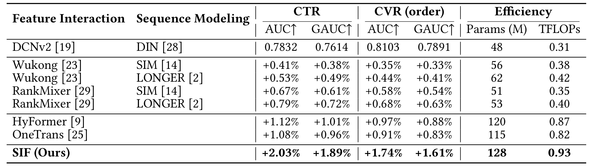
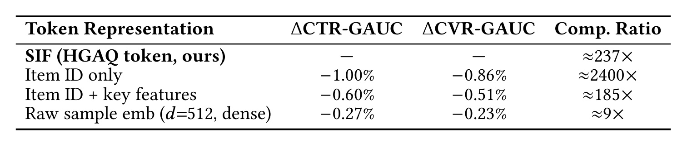
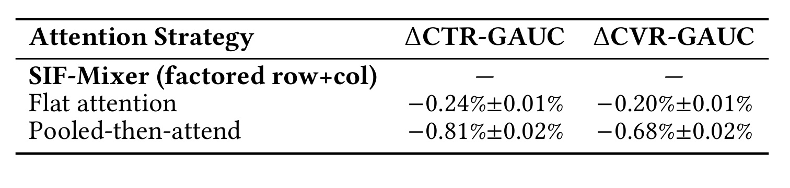
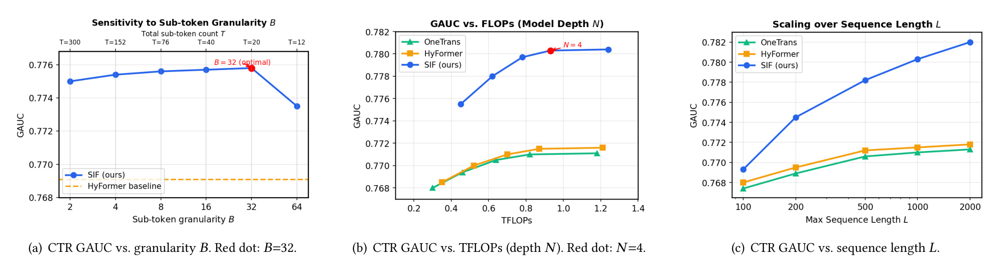
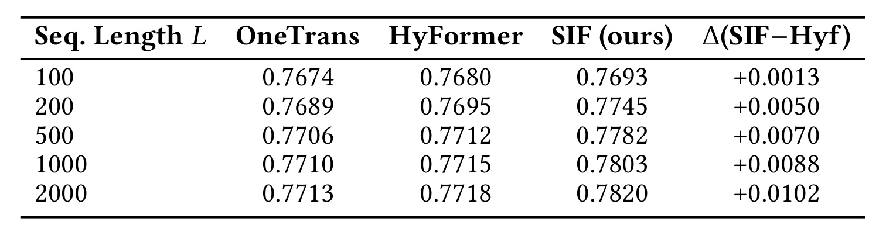
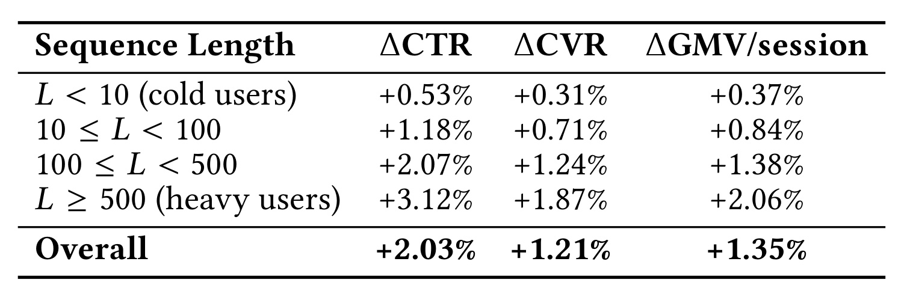

Sample Is Feature：把每一条历史样本压成 token 的大排序模型
这是美团团队发表在 RecSys 2026 的工作，一作 Shuli Wang，作者列表全部来自美团，通讯作者亦为一作。论文入口在 arXiv:2604.15650 v3（2026-07-16），会议信息为 20th ACM Conference on Recommender Systems（RecSys '26），DOI 10.1145/3773078.3831746。截至笔记撰写时未核验到公开的代码仓库或项目页，工程复现只能参考论文文本给出的 HGAQ 与 SIF-Mixer 参数。这篇论文的重点不是又一次刷 GAUC，而是把「样本本身能不能作为一个 token」这件事说清楚：训练日志里每一次历史交互都已经附带完整 Raw Sample（用户画像、商品特征、上下文、预交叉特征），但主流序列建模只把 item embedding 塞进序列 token，剩下的样本上下文全部丢弃。SIF 试图把这些被丢掉的信号原地补回来。
工业推荐同时在 sample information scaling（把每个历史交互塞更多特征）和 model capacity scaling（用统一 Transformer 处理序列与非序列特征）两条路线上做大，但两条路都撞墙：前者受限于 token 存储/服务成本，只能挑几个特征子集塞进历史 token，样本级、时变的上下文（实时热度、竞争曝光、时段需求）永远进不了序列；后者被序列 token（低信息密度）和当前请求 token（多字段高密度）之间的结构异构卡住，注意力不得不在两种量级不同的表示之间分配容量。SIF 要解决的核心矛盾是：训练日志里每条历史交互都已经存了完整的 Raw Sample，但没有一种表示能把它塞进定长序列 token 里同时保住成本。
1. 背景和问题
推荐系统是电商、短视频、本地生活等大规模平台的核心基础设施。在美团这样的外卖场景里每天服务的推荐请求以千亿计，排序模型 GAUC 的一小步改动直接换算成毛利与订单量。近年来的 scaling 讨论围绕两个方向：一是通过更长更深的行为序列扩大每个样本承载的信息量，二是通过统一 Transformer 结构扩大模型容量。SIF 的立论正是从这两条路线各自的结构性瓶颈出发。
从更宏观的视角看，2023 年后工业推荐系统进入「规模化训练」的阶段：从 DIN 类模型的百万参数，逐渐推进到 RankMixer、Wukong、HSTU、Zenith 等系列的十亿甚至百亿参数级别，行为序列长度也从数十扩展到数千甚至上万。这条路线的直觉是把 LLM 的 scaling law 迁移到推荐——更多参数、更多 token、更多数据。但推荐场景的 token 与 NLP 有一个本质差别：NLP 的 token 天然承载稠密语义，而推荐序列里每个「token」只是一次交互事件的 id 化压缩，绝大部分场景上下文早在训练日志采样时就被丢弃。这让「继续扩展序列长度」和「继续扩展模型容量」都陷入「表示信息密度不足」的天花板，反映到指标上就是 HyFormer、OneTrans 这类顶级 unified baseline 在 $L$ 超过 500 后几乎饱和，Table 4 的 +0.0005/+0.0006 数字就是这一点的直接证据。SIF 的动机是把「表示信息密度」这一维单独拉出来做，改造成 sample-level token 之后再让 scaling law 继续生效。
另一个需要介绍的历史方向是量化推荐（quantization-based recommendation）：从 VQ-Rec、TIGER 到 UIST、STORE、TRM、Zenith、IAT 等工作，量化已经在推荐系统里积累了丰富的实践。但那些工作基本都在「item 表示」层面做量化：把 item embedding 翻译成一串离散代码，并把这些代码与生成式建模、可迁移学习、新一代检索相连接。以这条脉络对照 SIF 会发现一个重要差别：SIF 不是要重新定义 item 表示，而是把量化目标从「item 表示」抬升到「历史交互瞬间」，需要针对多字段异构做分组分解，并将量化与排序目标直接耦合。两条路线回答的是不同层面的问题，并不互斥。
把 sample information scaling 与 model capacity scaling 两条路径的边界再说清楚一层：前者的核心变量是「每个训练样本本身承载多少可用信息」，主要靠拉长历史序列、拓宽 side information、增加交叉特征来实现，工程负担落在存储/带宽/离线特征回填；后者的核心变量是「主干网络能否把所有可用信息在同一空间里做深度交互」，工程负担落在训练算力、TFLOPs 与显存。这两条路径原本被视为可以叠加：模型更大、样本更信息浓，理论上收益翻倍。但作者观察到的真实情况是，一旦历史 token 的信息密度不上去，两条 scaling law 会同时提前饱和——Table 4 中 HyFormer 与 OneTrans 从 $L=500$ 到 $L=2000$ 只多 +0.0005/+0.0006，正是「模型更大 + 序列更长」但「单 token 信息密度不变」的具体表现。SIF 的定位因此不是「新一条 scaling 路径」，而是在两条既有路径之间补上「表示密度」这一被忽略的第三维度：把每个历史 token 从 bare item embedding 抬到 sample-level 之后，原有的两条 scaling law 才能重新沿曲线继续生效。
与量化推荐分支再做一次边界对齐同样有必要。VQ-Rec、TIGER 处理的是「跨域可迁移 item 表示」——把一个物料在不同平台之间用相同码字表述；UIST、STORE、TRM 面向 CTR 排序场景，但仍是把 item embedding 换成语义码；Zenith、IAT 更进一步把 prime token/instance embedding 也纳入压缩视角。这些工作共享一个隐含假设：量化目标是「静态的 item 或用户表示」，量化后的码字与时间几乎无关。SIF 打破的正是这条假设——它量化的对象是「一次曝光/点击瞬间的完整多字段快照」，同一 item 在不同时间、不同上下文下会映射到不同的 Token Sample，因此码字里天然携带时变信号。这一差别看起来只是「量化对象换了一层」，但工程含义完全不同：codebook 必须由排序标签监督（否则会把大量样本挤到少量码字造成 collapse），必须支持按天回填历史 Token Sample（否则新一版 codebook 与旧序列不同构），且 codebook 版本必须与 target 侧 $W_\text{res}$ 严格同步部署。
1.1 Sample Information Scaling 的两个子方向
论文把「样本信息 scaling」拆成序列加长（sequence lengthening）和序列加宽（sequence widening）。加长这一支从 DIN、DIEN 引入用户行为注意力，到 SIM、ETA 通过两阶段检索把序列拉到上千位，再到 LONGER 引入分层压缩把序列扩展到工业上限；所有这些方法有一个共同缺陷：每个历史 token 仍然只是一个 bare item embedding，token 内的信息密度是完全没有被开发的瓶颈。加宽这一支则试图给每个 token 增加上下文，例如 DSAN 挂上下文特征，TWIN 在检索侧拼接 target-item 特征，SINE 用对比学习注入 label/意图信号，最贴近 SIF 的是 Meta HSTU，它用线性注意力在上千个交互上塞入丰富的 side information。但正如作者反复强调的，加宽路线在存储和服务代价约束下只能选择性地塞进「关键字段子集」，直接把全部特征拼进去会让 sequence token 维度膨胀一个数量级，L=200 时注意力已经承担不起，float16 快照存储成本也彻底不可行。
具体到数据，按论文 §4.3.1 的口径：非序列快照包含 $|F_\text{non-seq}| = 600$ 个特征字段、每字段 $d_e = 8$ 维、以 float32 存储，则每个历史位置的完整快照为 $600 \times 8 \times 32 = 153{,}600$ bits ≈ 19.2 KB；一条 $L = 1000$ 的序列若逐位置存完整快照，单用户就需要 $\approx 19.2$ MB，工业侧完全不可接受。因此对量级 $L = 1000$ 的行为序列而言，「拼全量字段」在存储侧就是一道硬约束。上一代 sample information scaling 方法陷入了「手工选字段」的困局；要打破就必须引入自动化的比特压缩机制，而不能再依赖人手挑选字段。SIF 的 group-wise RVQ 正是对这一局面的系统化回答。
1.2 Unified 架构的异构瓶颈
第二类是把序列建模和特征交叉合并进一个 Transformer 骨干的 unified 架构，代表工作包括交错 FI/序列层的 InterFormer、用多任务联合优化的 MTGR、把所有字段当 token 的 OneTrans、显式区分 intra-field 与 cross-field 注意力的 HyFormer（也是 SIF 的主要基线），以及混合 MLP-Mixer 与 Transformer 的 MixFormer。它们共享一个结构性缺陷：历史 token 仍然停留在 item level。当序列 token（每个只是一个 item embedding）与当前请求 token（多字段特征堆叠）出现在同一个注意力空间里，两侧的信息密度完全不匹配，模型不得不在异构表示之间强行做 attention，容量利用率被结构本身压制。
换一种描述方式——序列 token 拿到的是「$N$ 维的 item embedding」，而当前请求 token 拿到的是「$M$ 维的拼接向量，包括用户、上下文、交叉统计、多个 category embedding」，$M \gg N$。Transformer 从当前请求上做 attention 时能提取到丰富的多字段信号，但一旦目光转向历史序列，它看到的只是「每一次行为一个固定长度的向量」，难以把丰富的当前信号与历史上下文真正对齐；同一套 attention 参数被迫在两种密度的 token 之间共享，容量利用率被结构本身压低。SIF 的 sample-level tokenization 把两侧拉到同一个信息密度上，不再需要在 attention 里为异构付出代价。
1.3 从「同一家店的两次点击」看问题
论文用一个非常具体的例子说明为什么 item embedding 不够：两个用户都点击了同一家餐厅，但一个是在深夜且优惠券生效的场景，另一个是在工作日午餐高峰。一个纯 item embedding 会把这两次交互当成同一件事，然而完整的 Raw Sample（用户画像、时段、优惠券、当时的排位、上下文竞品）会告诉模型这是两种截然不同的意图。要真正建模这种时变、上下文相关的信号，就必须把每一次历史交互当作「上下文完整的样本」而不是「被剥离到只剩 item 的行为点」。
这类信号在外卖场景中尤其明显：同一家门店在午高峰的曝光竞争激烈、点击成本高；同一份餐品在夜间可能被平台通过红包补贴强推。这些「实时热度、竞争曝光、时段需求」都是绑定在具体那次曝光/点击瞬间的样本级信号，永远无法从「静态 item 表示」里恢复。作者的立场是明确的：这些信号已经在训练日志的每条 impression record 里存在，问题不是数据缺失，而是没有一个够便宜的 token 表示把它们塞进序列。SIF 想说的是：把「样本」当作一等公民，而不是被拆掉只剩 item id 的行为点。
1.4 SIF 的问题定义
SIF 把问题重新定义为一个表示层压缩问题：训练日志里每条历史交互都已经存了完整的 request record（用户特征、item 特征、上下文、预计算 cross feature），瓶颈从「数据可获得性」转移到「表示效率」——如何以近似 item embedding lookup 的服务代价，把 Raw Sample 直接塞进序列 token。SIF 把这称为 sample-level tokenization，与 item-VQ 类方法（VQ-Rec、TIGER、STORE、TRM、Zenith、IAT、UIST）显式区分：那些工作把 item 表示量化成离散码，而 SIF 量化的是「完整多字段的样本快照」，需要针对异构字段做分组分解并让 codebook 由排序标签监督，这两点在 item-VQ 场景里都不存在。这样一来，序列变成完全同构的 Token Sample 序列，序列-非序列异构瓶颈也被顺带消解，让 unified 架构真正跑起来。
换成读者视角，SIF 相当于承诺两件事：其一，在存储侧只多存一组 codebook index（论文口径下每个历史位置 648 bits，相对完整 float32 快照约 237 倍压缩），近似「白拿了原本要丢弃的样本上下文」；其二，在计算侧 SIF-Mixer 的复杂度仍然与标准序列注意力同阶，Sample-level Mixer 主导 $O(L^2 \cdot T \cdot d_0)$，Token-level Mixer 只是加了个 $O(T^2 \cdot L \cdot d_0)$ 的额外项，$T$ 只有二十几，在实践中可忽略。综合这两点，SIF 想解决的问题清单可以浓缩为四条：（1）历史 token 承载的信息密度太低；（2）序列/非序列 token 之间存在结构异构；（3）已有的 sample information scaling 方法都在存储代价约束下裁字段；（4）已有的 model capacity scaling 方法在异构表示上难以充分释放容量。这四条构成了后续方法设计的直接约束。
2. 方法
SIF 由两个组件构成：Sample Tokenizer（离线把 Raw Sample 压成 Token Sample）与 SIF-Mixer（在线在同构 Token Sample 上做深度特征交互）。Figure 1 给出四子图：（a）Sample Tokenizer 用 HGAQ 把 Raw Sample $S$ 压成 $Q$；（b）Sample splicing 用 Token Sample 替换 item embedding；（c）序列化时加入 recency position embedding；（d）SIF-Mixer 用 $N$ 个 SIF Block 串联，每个 Block 包含 Token-level Mixer、Sample-level Mixer 与 Token-level FFN。要理解 SIF 最重要的一点是：每个历史位置从「一个 item embedding」升级为「$T \times M$ 个离散 codebook index」，服务侧仍然只需要一次 codebook lookup，但承载的信息量接近原始样本快照。从时序看，Sample Tokenizer 与 SIF-Mixer 训练同时发生（共用同一 batch，$\mathcal L_\text{BCE}$ 同时反传到两部分），部署时两部分完全解耦：前者作为「行为序列预计算作业」定期离线更新 codebook，后者作为「在线推理服务」接入排序链路，双方只需强制共用同一 codebook 版本即可保证一致性。

图 1 的上半幅（1.jpg）依次呈现 Sample Tokenizer、样本拼接（Sample Splicing）与序列化（Serialization）三步。左侧 Sample Tokenizer 展示 Raw Sample $S = [f_\text{user} \mid f_\text{item} \mid f_\text{ctx} \mid f_\text{cross}]$ 如何按语义拆成 $G = 4$ 组，再由 HGAQ 内部的自适应子 token 划分（$K_g = \lceil |F_g|/B \rceil$，默认 $B = 32$）与 $M = 3$ 级 Residual VQ 把每一组压成 $T \times M$ 个 8-bit codebook index，得到 Token Sample $Q$。中间的 Sample Splicing 展示训练日志里每条 impression record 通过「PV ID + Item ID」的 join 把 Raw Sample 与它对应的历史点击对齐，从而把「item-level 序列」原地升级成「sample-level 序列」，把过去被丢弃的用户/上下文/交叉快照重新贴回每一位历史 token。右侧 Serialization 展示排好序的 $L$ 个 Token Sample 如何在每个子 token 上分别加 recency position embedding $p_{L-l}$，保证同一历史位置的所有子 token 共享同一个相对当前请求的时间信号，而非「拼接后再加一次位置编码」那种把 group 打散的方式。

图 1 的下半幅（2.jpg）展开 SIF-Mixer 的主体，左端进入的是「Target Token Sample（$l = 0$）+ $L$ 个历史 Token Sample（$l = 1, \dots, L$）」这一 $(L+1) \times T \times d_0$ 张量，Target 端通过 $W_\text{res}$ 线性投影进入 codebook 空间，历史端通过 codebook lookup 得到 $z^{(g,k)}_l = \sum_{m=1}^M c^{(g,k,m)}_{q^{(g,k,m)}}$。中段是 $N$ 个堆叠的 SIF Block，每个 Block 内部按「Token-level Mixer（行注意力，沿 $T$ 个子 token 做 intra-sample self-attention 捕捉 group 间与 group 内子概念的交叉）→ Sample-level Mixer（列注意力，沿 $L+1$ 个样本在同一子 token 列做 inter-sample self-attention，让 target 在同一语义列内 attend 全部历史）→ Token-level FFN（逐位置非线性变换）」三段串行，把「样本内特征交互」与「跨样本时序交互」显式解耦。右端把 Target Token Sample 在 $T$ 个子 token 上的输出做均值池化后送入两层 MLP + sigmoid 得到 $\hat y$，把行列 mixer 的双向信号收敛成单一预测。
2.1 Sample-Level Token 与 HGAQ
论文在 §3.1 把交互时刻 $t$ 的 Raw Sample 定义为完整的多字段元组 $S = [f_\text{user} \mid f_\text{item} \mid f_\text{ctx} \mid f_\text{cross}]$（式 (1)），其中 $f_\text{user}$ 是用户画像，$f_\text{item}$ 是商品特征，$f_\text{ctx}$ 是上下文信号（时段、位置、场景、天气），$f_\text{cross}$ 是预计算的用户-商品-上下文交叉统计（如用户对某品类的偏好、店铺-场景共现频次），$S \in \mathbb{R}^{d_s}$。论文区分 point features（可被量化）与 sequential features（行为序列 $B$，交给 SIF-Mixer 建模时序）。Raw Sample 是「量化前的完整多字段快照」，Token Sample 是它经 Sample Tokenizer 后的离散 index 集合；长度 $L$ 的历史每一位映射为一个 Token Sample，当前请求亦处理为 Target Token Sample（$l = 0$），共享同一 codebook 空间。HGAQ（Hierarchical Group-Adaptive Quantization）先做 Group-Wise Decomposition：$S = [\underbrace{f_\text{user}}_{G_1} \mid \underbrace{f_\text{item}}_{G_2} \mid \underbrace{f_\text{ctx}}_{G_3} \mid \underbrace{f_\text{cross}}_{G_4}]$（式 (2)），分组灵活——item ID 这类高基数特征可放 singleton group，避免辨识信号被稀释；分组量化把容量 $V^G$ 的大 codebook 拆成总容量 $G \cdot V$ 的小 codebook，参数量可控且同类语义内取值区分度更高。自适应子 token 划分 用一个直接的公式决定每组的子 token 数：
符号解释：$K_g$ 是第 $g$ 组分到的子 token 数量；$|F_g|$ 是该组字段数；$B$ 是「子 token 粒度」超参（每个子 token 承担多少特征字段），默认 $B = 32$。字段多的组自然拿到更多子 token，在 Token-level Mixer 中占据更多列。每个子 token 通过 group-slot 独有的线性层投影到统一维度 $d_0 = 16$：
符号解释：$\tilde f^{(g,k)}$ 是第 $g$ 组第 $k$ 个子 token 的投影向量；$W_\text{proj}^{(g,k)}$ 是该 group-slot 独占的投影矩阵；$f^{(g,k)}$ 是分配给该子 token 的原始字段拼接向量；$d_0 = 16$ 是共享维度。每个样本总子 token 数 $T = \sum_{g=1}^G K_g$，每个 $(g,k)$ 拥有独立 codebook $\mathcal C_{g,k}$、$V = 256$ 码字。为什么再拆子 token？若把 item 组内价格、品类、店铺评分、历史 CTR 强行压成一个子 token，Token-level Mixer 就无法在它们之间做内部交叉；拆开后每个子 token 占 Mixer 一列可跑 self-attention。$B = 32$ 在 Figure 2(a) 被验证为甜蜜点，$T \in [15, 30]$ 是安全参考区间。此处需要额外交代 $\tilde f^{(g,k)}$ 的输入输出口径：输入是同组 $|F_g|$ 个字段按顺序切成 $K_g$ 份后，第 $k$ 份内所有字段的拼接向量（每字段先按自身 embedding table 查得 $d_e$ 维稠密表示，再拼接得到 $|F_g^{(k)}| \cdot d_e$ 维向量）；输出是统一到 $d_0 = 16$ 维的投影向量，用作 RVQ 的初始残差 $r^{(g,k,1)}$。$W_\text{proj}^{(g,k)}$ 之所以每个 group-slot 独占而不共享，是为了让「用户组第 3 个子 token」和「item 组第 3 个子 token」承载完全不同的语义——共享投影会强行把两个不相关子空间压到同一子流形上，反而伤害后续 codebook 的辨识度。单级 VQ 对 $d_0 = 16$、$V = 256$ 只有 8 bits 精度，作者用 $M$ 级 Residual VQ 逐级把残差再量化，$\arg\min_v$ 在 $V = 256$ 码字内选中与当前残差欧氏距离最小的一个：
符号解释：$q^{(g,k,m)}$ 是子 token $(g,k)$ 在第 $m$ 级 RVQ 上选中的 codebook index；$r^{(g,k,m)}$ 是第 $m$ 级残差，初始 $r^{(g,k,1)} = \tilde f^{(g,k)}$；$c_v^{(g,k,m)}$ 是第 $m$ 级 codebook 的第 $v$ 个码字。Token Sample 把所有子 token 上的 index 拼接：$Q = (q^{(g,k,1)}, \dots, q^{(g,k,M)})_{g,k}$（式 (6)）。$M = 3$ 级 RVQ 相当于 24 bits 表示（$2^{24}$ 组合），存储仅 24 bits 却接近 dense embedding 表达容量，第一级学主要语义、后续级刻画残差。论文默认 $G = 4, B = 32, M = 3, V = 256$ 下宣称 $T = 27$、每个 Raw Sample 压为 $27 \times 3 \times 8 = 648$ bits；但 §3.4 又写「$B = 8$ 下 $T$ 小于 20」，Figure 2(a) 标注又写「$B = 32$ 下 $T = 20$」，三套口径笔者按原文如实记录、不擅自统一，复现时应以 $648$ bits/237× 对应的 $T = 27$ 为默认值，并以自己场景下的 $|F_g|$ 除以 $B$ 现算一遍作为交叉验证。训练与推理在 Sample Tokenizer 侧存在关键差异：训练时当前请求 $S_\tau$ 也需要过一次完整 RVQ 得到 $e_{g,k}$ 作为 alignment target，梯度沿 straight-through estimator 反传到 codebook；推理时这一遍 tokenizer forward 完全省略，只用线性投影 $W_\text{res}$ 把 $S_\tau$ 映射到 codebook 空间即可，因此线上代价只是「一次矩阵乘」而不是「多级 RVQ」。同构化是 SIF 后续设计的地基：非序列上下文由 Sample Tokenizer 做「信息压缩」，时间顺序由 SIF-Mixer 的列注意力做「时序建模」。
2.2 标签监督与 Sample Splicing
作者不满足于常规 reconstruction-only VQ，而是把 tokenizer 和排序目标联合优化：训练时把 RVQ 重构结果 $\hat s$ 喂给轻量 MLP 预测 CTR，$\hat s = \big\Vert_{g,k}\big[\sum_m c_{q^{(g,k,m)}}^{(g,k,m)}\big]$、$\hat y_\text{token} = \sigma(\text{MLP}(\hat s))$（式 (7)），辅助损失 $\mathcal L_\text{token} = \mathcal L_\text{BCE}(\hat y_\text{token}, y)$。codebook 按「对预测有用」组织，而非纯按重建误差排布。传统 VQ-VAE 用重建损失推动 codebook 向「code 与原特征尽量接近」优化；排序语境下真正重要的是「能否把预测相关信息留在 code 里」——$\mathcal L_\text{token}$ 直接给 codebook 一个「以预测为导向」的量化反馈。式 (7) 中 $\hat s$ 使用 concat（$\big\Vert_{g,k}$）而不是求和，若误写为求和不同 group-slot 的信号会在同一维度叠加导致辨识度崩塌。「item ID 单独放一组」的处理同样有实际意义：item ID 高基数、频度极不均衡，若与低基数字段共 codebook，容量会偏向高频 item ID、把低基数特征挤入同一码字。这里必须记录一处口径不一致：论文正文声明 $\mathcal L_\text{token}$ 加入总目标，但式 (17) 只展示 $\mathcal L_\text{BCE} + \beta \mathcal L_\text{VQ} + \gamma \mathcal L_\text{align}$ 三项，未把 $\mathcal L_\text{token}$ 显式写进方程；本笔记按原文如实保留、不擅自补齐。
标准的行为序列只记录 item id 序列 $\{i_1, \dots, i_L\}$；SIF 把它升级为 Token Sample 序列 $\{Q_1, \dots, Q_L\}$（§3.3 公式 (8)），每个 $Q_l \in \{1, \dots, V\}^{T \times M}$ 编码第 $l$ 次交互的完整多字段快照。序列化时在每个子 token 上分别加 recency position embedding（公式 (9)）：$H^0_{l,*} = [z^{(1,1)}_l + p_{L-l} \Vert \cdots \Vert z^{(G,K_G)}_l + p_{L-l}]$，即同一历史位置的所有子 token 都加上同一个相对当前请求 $\tau$ 的时间位置嵌入 $p_{L-l}$；这与「拼接后再加一次位置编码」不同，避免位置信号在 Token-level Mixer 内被 group-wise 打散。Token Sample 离线预计算并存到 KV 存储。线上推理拉的不再是 embedding，而是 $L \times T \times M$ 个 uint8 索引（$V = 256$），拿到索引后再到 codebook lookup 得到向量。以 $L = 1000$ 为例：传统 int64 item ID 每位 64 bits ≈ 8 KB；SIF 每位 648 bits = 81 B，共约 81 KB；直接存 float32 完整快照每位 19.2 KB、共约 19.2 MB。SIF 相比传统 item ID 多约十倍、但比稠密快照小两个数量级。工程上需注意：（a）codebook 作为参数需预加载管理，20K 量级码字可直接常驻实例；（b）Sample Tokenizer 离线作业需与线上 codebook 同版本，否则 codebook 更新后需回填历史 Token Sample；（c）target 侧 $W_\text{res}$ 与 codebook 需同时发布，否则 Target 与历史 Token Sample 不同构、Sample-level Mixer 的列注意力将失效。
2.3 SIF-Mixer 行列分解
SIF-Mixer 借鉴 MLP-Mixer，堆叠 $N$ 个同构 SIF Block；每个 Block 分解为 Token-level Mixer → Sample-level Mixer → Token-level FFN 三步，显式把「样本内交互」和「跨样本时序交互」拆开。Input layout 由 $L$ 个历史 Token Sample 和 1 个 Target Token Sample 组成，初始隐藏态 $H^0 \in \mathbb{R}^{(L+1) \times T \times d_0}$；历史端按 $(g,k)$ 做 codebook lookup 得到 $z^{(g,k)}_l = \sum_{m=1}^{M} c_{q^{(g,k,m)}}^{(g,k,m)} \in \mathbb{R}^{d_0}$，Target 端由学到的线性投影 $H^{0,(g,k)}_0 = W_\text{res}^{(g,k)}\, f_\tau^{(g,k)}$（公式 (10)）投到同一 codebook 空间，alignment 损失（见 2.4）保证一致性。Token-level Mixer（row attention） 沿每个样本内部的 $T$ 个子 token 做自注意力，捕捉 group 间与 group 内子概念的交叉：
符号解释：$\tilde H^n_l$ 是第 $n$ 个 SIF Block 中位置 $l$ 上 Token-level Mixer 后的隐藏态；$H^{n-1}_l \in \mathbb{R}^{T \times d_0}$ 是上一层同位置输出；$\text{MHA}$ 是标准多头自注意力，作用维度是 $T$ 个子 token 组成的「行」；$\text{LN}$ 是 pre-norm LayerNorm。这一步的输入输出边界值得强调：Token-level Mixer 只在同一 $l$ 位置内部把 $T$ 个子 token 拉到 attention 里，不同 $l$ 之间的信息在这一子操作里完全不流动，因此复杂度是每位置独立的 $O(T^2 \cdot d_0)$、全序列 $O((L+1) \cdot T^2 \cdot d_0)$。同一个 MHA 参数在 $l = 0, \dots, L$ 上共享，这既是显存约束也是归纳偏置——它逼迫模型把「用户组 vs. item 组的交叉方式」学成一种与时间位置无关的通用规则，从而让 Target 侧只有一列的 attention 也能沿用同一套 group-组交叉先验。若把每个 $l$ 的 MHA 换成独立参数，训练样本量根本喂不出稳定统计，也会破坏 Target 与历史的表示可比性。Sample-level Mixer（column attention） 沿每个子 token 位置在 $L+1$ 个样本之间做自注意力——关键在于 Target Token Sample（$l = 0$）可在同一列内 attend 所有历史 Token Sample：
符号解释：$\bar H^n_{*,p}$ 是第 $n$ 个 Block 中「列」$p$（第 $p$ 个子 token 位置）在 $L+1$ 样本上的隐藏态。与传统序列建模（DIN/SIM/LONGER）不同：传统做 target-attention、target 只发一条 query；SIF 每个历史位置拆成 $T$ 个子 token，同列共享同一子概念（价格、时段、用户-商品交叉），attention 在「同一类语义内」做时序递归。Token-level FFN 逐位置非线性变换 $H^n_{l,p} = \bar H^n_{l,p} + \text{FFN}(\text{LN}(\bar H^n_{l,p}))$（式 (14)）。Prediction head 经 $N$ 个 SIF Block 后，Target 在 $T$ 个子 token 上均值池化 $h = \frac{1}{T}\sum_{p=1}^T H^N_{0,p}$（式 (15)），再送入两层 MLP + sigmoid $\hat y = \sigma(w_2^\top \text{ReLU}(W_1 h + b_1) + b_2)$（式 (16)）。复杂度分析 每 Block 代价 $O(T^2 (L+1) d_0 + (L+1)^2 T d_0)$，$T \ll L+1$ 时 Sample-level Mixer 主导即 $O(L^2 T d_0)$，与标准序列注意力同阶；论文「$B=8$ 下 $T$ 小于 20」与 §3.2.2 说 $T = 27$ 不一致。与 HyFormer、OneTrans 相比，SIF 的不同在于把 Row/Column 显式拆开：HyFormer 的 hybrid attention 仍在单窗口同时处理 intra-field 与 cross-field，OneTrans 把所有字段量化后仍用平坦 Transformer；SIF 两维都是同构 Token Sample，Token-level Mixer 处理组-组交叉、Sample-level Mixer 处理同列时序递归，两种交互正交性低代价换回更大收益。
2.4 训练目标与 Alignment 对齐
SIF 的总损失把主排序目标与两个正则项写成同一目标，形式上与 VQ-VAE 类接近但把量化与列注意力对齐写入同一方程。方法章前面出现的辅助损失 $\mathcal L_\text{token}$（式 (7)）在正文里被明确写为「加入总目标」，但式 (17) 只列出 BCE、VQ、align 三项，笔者按原文如实保留这一处口径分歧；复现时可选择两种口径之一：口径 A 忠实于正文叙述，把 $\mathcal L_\text{token}$ 以较小权重加入总损失作为「预测导向的 codebook 反馈」；口径 B 忠实于式 (17)，把预测相关信号完全交给 straight-through estimator 通过 BCE 反传到 codebook。两种口径不需要都跑，但必须在 ablation 里注明选了哪一种，否则读者无法解释 codebook 学出的语义倾向。
符号解释：$\mathcal L_\text{BCE}$ 是排序主目标的二分类交叉熵；$\mathcal L_\text{VQ}$ 是标准 VQ commitment loss（组内 encoder 输出与 RVQ 重构之间的距离，内部权重 $\lambda = 0.25$）；$\mathcal L_\text{align}$ 是 Target 侧投影与 codebook 空间的对齐损失；$\beta = 1.0$、$\gamma = 0.25$。这里的两个数值选择本身信息量不小：$\beta = 1.0$ 意味着 codebook 的 commitment 项与主排序目标同量级、共同决定收敛方向；$\gamma = 0.25$ 则表示 alignment 只以「辅助正则」形式出现，如果调到过大会让 $W_\text{res}$ 强行拟合 codebook 反而丢掉 target 侧的独立表达。$\mathcal L_\text{align}$ 保证 Target Token Sample 的在线投影 $W_\text{res}$ 与 codebook 空间一致：
符号解释：$W_\text{res}^{(g,k)}$ 是服务时唯一用到的 target 侧线性投影；$f_\tau^{(g,k)}$ 是当前请求 $S_\tau$ 在子 token $(g,k)$ 上的原始特征拼接；$e_{g,k} = \sum_m c^{(g,k,m)}_{q^{(g,k,m)}}$ 是 tokenizer 在当前请求上的 codebook 重构；$\text{sg}(\cdot)$ 是 stop-gradient，只让梯度推动 $W_\text{res}$ 而不反向污染 codebook。训练时把 $S_\tau$ 过一次 tokenizer 得到 $e_{g,k}$ 作为 alignment target，服务时省掉这一步只用 $W_\text{res}$。为什么需要 alignment loss？$S_\tau$ 在推理时跑多级 RVQ 代价不可接受，作者用单线性层直接投到 codebook 空间；若不控制这个投影，它会落在与 codebook 无关的空间导致 Target 与历史 Token Sample 不同构、列注意力失去意义。$\mathcal L_\text{align}$ 把 $e_{g,k}$ 用作对齐锚点，Table 5「冷启用户也有 +0.53% CTR」的主要归因就是这个机制。三项损失量级相对平衡：$\mathcal L_\text{BCE}$ 在 $O(1)$ 量级，$\mathcal L_\text{VQ}$ 以 $\lambda = 0.25$ 累加 $M \times T$ 个残差平方和，$\mathcal L_\text{align}$ 以 $\gamma = 0.25$ 控制同阶；$\beta = 1.0$ 而 $\gamma = 0.25$ 表明作者更强调 codebook 自身正交化。反传链：$\mathcal L_\text{BCE}$ 经 prediction head、MHA、straight-through 反传到 codebook；$\mathcal L_\text{VQ}$ commitment 推 encoder 输出靠近 codebook；$\mathcal L_\text{token}$（式 (7)）提供预测-相关信号。
2.5 存储、复杂度与服务链路
论文把 sample-level token 的存储压缩率定义为 $\text{Compression Ratio} = b_\text{snapshot} / b_\text{token}$（式 (19)），$b_\text{snapshot} = |F_\text{non-seq}| \cdot d_e \cdot 32$、$b_\text{token}$ 为实际 token 存储比特。举例 $|F_\text{non-seq}| = 600, d_e = 8$，$b_\text{snapshot} = 153{,}600$ bits；HGAQ 只存 $T \times M$ 个离散 index（每个 8 bits），$b_\text{token} = 27 \times 3 \times 8 = 648$ bits，压缩率约 $237\times$。这个高压缩率来自「真压缩」——完整快照可通过 codebook lookup 恢复——而非丢弃字段。对 $L = 1000$ 序列：传统 int64 item ID 每位 8 B、共 8 KB；SIF 每位 81 B、共约 81 KB，但保留样本级完整上下文；float32 完整快照每位 19.2 KB、共约 19.2 MB。SIF 存储比 item ID 大一个数量级、比稠密快照小两个数量级，落在工业 KV 存储可承受的中间区域。推理实时性与部署 在线推理只多出 codebook lookup 的 random-access 内存带宽开销，A100 环境可忽略；codebook 直接作为模型参数一体部署。与已有 sequence widening 方法对比：DSAN、TWIN、SINE、HSTU 都只能向历史 token 拼「部分字段」（TWIN 只拼 target-item 特征，HSTU 选择性拼 side info），SIF 通过 HGAQ 把完整 Raw Sample 映射到 $T \times M$ 个离散 index、无需手工选字段；HGAQ 相当于「自动化 feature selector + quantizer」，迁移新场景只需调整 $|F_g|$、$G$、$B$ 三参数。
Codebook 使用率与稳定性 从设计可推出：$M = 3$ 级 RVQ 使高频语义在第一级已收敛，第一级 usage 通常最高、后续级递减，工程上监控第一级 code 均衡度就足以判断 tokenizer 健康；$V = 256$、$d_0 = 16$ 下每个 codebook 参数量约 $4\text{K}$、总参数约 $27 \times 3 \times 4\text{K} \approx 320\text{K}$（数百 KB）可一次性加载实例；codebook 由 $\mathcal L_\text{BCE}$ 反传监督，若下游 label 分布突变（新品类爆发或补贴切换），codebook 会漂移，需按天回填 Token Sample。运维复杂度从「字段维护」迁移到「codebook 版本管理」。Row/Column 拆分为何优于 Flat 与 Pooled：Table 3 会给出三种注意力布局对比：pooled 会把 intra-sample 特征结构完全抹平等于禁用 Token-level Mixer；flat 保留所有子 token 但缺显式归纳偏置且 $O((LT)^2)$ 代价过高；factored 把 $T$ 相关开销保持线性又充分利用 token 矩阵二维结构。方法章五节所有设计都指向同一件事：让 sample-level token 的信息在下游 mixer 里保持可学习、可解耦、可与 target 侧对齐。整个方法章至少残留三处需要复现者拍板的口径：（a）$\mathcal L_\text{token}$ 是否显式加入总目标（正文说加、式 (17) 未列）；（b）$T$ 到底是 27 还是「$B=8$ 下小于 20」；（c）式 (7) 里 $\hat s$ 的组合方式是 concat 而非求和。这三处均按论文原文如实呈现、不擅自补齐。
训练与推理的差异清单 值得一次性拉出来对照：训练阶段每个 batch 同时驱动 Sample Tokenizer 与 SIF-Mixer 两条前向，历史侧通过 codebook lookup 得到 $z^{(g,k)}_l$、Target 侧通过 $W_\text{res}$ 得到在线投影，$\mathcal L_\text{BCE}$、$\mathcal L_\text{VQ}$、$\mathcal L_\text{align}$ 三项 loss 同批反传；$S_\tau$ 需要额外走一次完整 RVQ 以生成 alignment target $e_{g,k}$，这一次 forward 在推理时会被彻底跳过。推理阶段 Sample Tokenizer 完全下沉到离线：历史 Token Sample 在样本落盘时就已经生成并写入 KV 存储，线上只做「按 (user, timestamp) 拉取 $L$ 条 $T \times M$ 个 uint8 索引 → codebook lookup 得 $z^{(g,k)}_l$ → 加 recency position → 送 SIF-Mixer」这条链路，Target 侧同样只跑一次 $W_\text{res}$ 线性投影不再走 RVQ。这种「训练同批联合、推理彻底解耦」的分工是 SIF 能上线的核心工程前提，也是 $T$ 的三套口径（27／20／$B{=}8$ 下 $<20$）必须在复现之初就明确的原因：训练侧、推理侧、KV 侧任何一处 $T$ 或 codebook 版本对不齐，Sample-level Mixer 的列注意力就会在异构表示上求 attention，$\mathcal L_\text{align}$ 提供的对齐保障也随之失效。工程上建议把 codebook 版本号、$T$、$B$、$M$、$V$、$d_0$ 一起写进 Token Sample 的 header，服务侧启动时做强校验。
3. 实验结果
3.1 实验设置
作者用单个大规模美团工业数据集：$1\text{B}^+$ 曝光记录、跨越 90 天、$50\text{M}^+$ 用户、$5\text{M}^+$ 商品，每条样本包含 $\sim 600^+$ 特征字段（覆盖 user profile、item attributes、contextual signals 与预交叉特征），行为序列长度 $L = 1000$。所有 4 个语义组 $G_1$–$G_4$ 都启用自适应子 token 划分（$B = 32$）。所有 baseline 收到与 SIF 相同的当前请求特征，唯一差异在于历史行为序列的表示：baseline 用标准 item embedding，SIF 用 HGAQ 压缩的 Token Sample。
指标与显著性。 AUC / GAUC（Group AUC）+ FLOPs；每个数字来自 5 次独立训练取平均，配对 $t$ 检验 $p < 0.01$。
Baseline 组织。 沿两个轴：(a) 变更 FI（DCNv2、Wukong、RankMixer）；(b) 变更序列建模（DIN、SIM、LONGER）；(c) unified 框架（HyFormer、OneTrans）作为最强对照。
实现细节。 PyTorch + $8 \times$ A100-80G；SIF-Mixer：$N = 4$ SIF Block、8 heads、$d_0 = 16$、FFN 维度 $4 \times d_0$、pre-norm LayerNorm、$T$ 均值池化；Sample Tokenizer：$G = 4$, $B = 32$, $M = 3$, $V = 256$, $d_0 = 16$；Adam（lr=$10^{-3}$，$\beta_1 = 0.9$，$\beta_2 = 0.999$，wd=$10^{-5}$），batch=4096，序列长度 $L = 1000$。
参数量分布。 SIF 总参数 128M，相对 HyFormer 120M 多出 8M（主要来自 codebook + $W_\text{proj}, W_\text{res}$），TFLOPs 从 0.87 变为 0.93（只多 7%）。codebook 总代码字数约为 $\sum_g K_g \cdot M \cdot V \approx 20K$，每代码字 $d_0 = 16$，存储开销在数百 KB 量级，完全可以作为模型参数一同预加载到服务实例。
机器相对代价。 训练阶段，相对 HyFormer，SIF 额外多一次 Sample Tokenizer forward（对当前请求也跑 tokenizer 以得到 alignment target），作者未拆分报告训练时长，但可以估计为 HyFormer 的 $\sim 1.1 \times$（tokenizer 很轻量，受 $L$ 影响主要来自 Mixer）。推理阶段如前所述只多 7% 算力开销。
与同行工作的公平对比。 论文特别强调一件事：所有 baseline 都拿到与 SIF 同样的当前请求特征集（user、item、context 字段），唯一不同在于历史行为序列的表示方式：baseline 用标准 item embedding，SIF 用 HGAQ Token Sample。这句话后面的含义很重：它排除了“SIF 因为额外弄了更多特征才赢”这个自然怀疑，把增益完全锁定到「历史行为序列从 item-level 变为 sample-level」这一单层变化上。反过来看，也它就把 baseline 的盐道定到了一个相对苛刻的版本：DIN/SIM/LONGER 在原论文里很少拿到完整的 600+ 当前请求字段，而这里为了公平一律发齐，代价是相当于把 baseline 的序列建模方法无关变量一盿子拉高了一个台阶，以 SIF vs. HyFormer +0.91% CTR AUC 这个数字才能真正反映 sample-level tokenization 本身的增量。统计口径上作者也把具体参数给足：每个数字为 5 次独立训练均值，配对 $t$ 检验在 $p < 0.01$ 下认定显著，不同 $L$ 与不同 $N$ 下的 GAUC 对比都基于同一接口重跑 5 次，因此 Table 4 中 $L=100 \to L=2000$ 的 +0.0013 → +0.0102 单调拉开才可归因于方法本身而不是随机波动。不过需提醒一个隐含边界：训练时长未拆分报告（Sample Tokenizer forward 可能把总时长拉到 HyFormer 的 $\sim 1.1\times$），因此在“相同时长下而非相同步数”的对比口径下 SIF 的实际优势会略小于 Table 1 报告的 +0.91%，复现方建议先对齐“每 100M 样本下的 GAUC”再看方法差。
3.2 主结果对比

Table 1 把 SIF 与三大类基线（不同 FI × 不同序列建模的组合、unified 框架 HyFormer / OneTrans）放在同一张表里。以 DCNv2 + DIN 为绝对基准（CTR AUC 0.7832 / GAUC 0.7614、CVR AUC 0.8103 / GAUC 0.7891、48M 参数、0.31 TFLOPs），SIF (Ours) 拿到 +2.03% AUC / +1.89% GAUC on CTR 与 +1.74% AUC / +1.61% GAUC on CVR，参数 128M、0.93 TFLOPs。相较最强 unified 基线 HyFormer（+1.12% / +1.01% CTR，+0.97% / +0.88% CVR），SIF 分别再多 +0.91% CTR AUC / +0.88% CTR GAUC 和 +0.77% CVR AUC / +0.73% CVR GAUC，且论文声明 $p < 0.01$。
论文对结果做了三点分析：（1）SIF 相对 unified baseline 的稳定收益证明把序列 token 从 item 级抬升到 sample 级带来的增益，独立于 Transformer 骨干本身；（2）专用模型（SIM、LONGER 系列）明显优于纯 FI（Wukong、RankMixer 系列），说明行为序列在美团场景里是核心；unified 又反过来超过所有专用模型，说明「统一序列 + FI」的架构方向正确；（3）+0.88% GAUC 在工业量级里是显著的，参考推荐界经常引用的「0.001 绝对 AUC ≈ 0.1% CTR」经验（作者引用 TWIN、Wukong、DIN 的实证观察），SIF 的离线增益预计能翻译成 +0.7%+ 线上 CTR；后文 §4.5 的 +2.03% 线上 CTR 远超这个投射，作者归因于 sample-level token 带来的时变信号（实时热度、上下文需求）是静态 AUC 评估里无法捕捉的。
从一个实践者的视角，Table 1 里有两个值得单拿出来看的数字：第一个是 SIF vs. HyFormer 的 CTR AUC 绝对差 0.0071（+2.03% - +1.12% = +0.91%），第二个是 SIF 的参数量 128M 与线上代价 0.93 TFLOPs。后一个数字重要之处在于，相比 HyFormer 的0.87 TFLOPs，SIF 只多消耗 7% 的推理算力，就多吃下 +0.91% AUC 的增量，工业上这是一个相当高的 ROI——尤其考虑到很多方法（如 Wukong+LONGER）多吃 30% 算力才换回 +0.72% GAUC。还应提醒一句：Table 1 里的“+% 相对 DCNv2+DIN”表述方式使得“小改进”看起来都位于个位百分比区间，但 GAUC 的绝对盘牧数已经在 0.76 一带，任何相对 +1% 就对应绝对约 +0.008 的 GAUC，应把它与 Wukong/LONGER 的 +0.0004 量级区分开。另一个容易被忽略的读法是 CVR 列完全与 CTR 列同向：美团外卖场景下 CTR 与 CVR 共享一套进阶目标，多任务训练则 codebook 会同时被两份监督信号推动，若在单 CTR 目标下重跑 SIF，预计 CVR 侧增量会变小，这也是本表报告 CVR/CTR 两列而非只报 CTR 的实际价值。
3.3 Sample Tokenizer 消融

Table 2 沿两个轴对比 token 表示的选择：质量（GAUC 差距）与压缩率（Comp. Ratio）。四行对应：
- SIF（HGAQ token）：$T \times M$ 个离散码字，$27 \times 3 \times 8 = 648$ bits，约 $237\times$ 压缩，作为基准（—）。
- Item ID only：只保留一个 int64 item ID = 64 bits，看起来 $\approx 2400\times$ 压缩最猛，但 GAUC 掉 $-1.00%$ / $-0.86%$，跌到比 OneTrans 还差；作者指出这是「彻底丢掉非 item 上下文」的信息损失伪装成的压缩，Token-level Mixer 也失效。
- Item ID + key features：加入 $\sim 24$ 个高价值手工特征（价格桶、品类、CTR 统计等），$64 + 24 \times 32 = 832$ bits，$\approx 185\times$ 压缩；GAUC 差距缩小到 $-0.60%$ / $-0.51%$，但仍然丢掉大部分上下文。
- Raw sample emb（$d = 512$, dense）：把全部快照特征拼起来再线性投影成 512 维稠密向量，无量化；$512 \times 32 = 16384$ bits，$\approx 9\times$ 压缩；GAUC 差距 $-0.27%$ / $-0.23%$。
值得注意的是第四种「稠密全量化前」表示保留了原始信号，但仍然落后于 HGAQ。作者给出三点解释：（a）512 维 token 与 HGAQ 的 $T \times d_0 = 432$ 维大致相当，但缺乏离散结构，$L = 1000$ 的跨时序注意力优化更困难；（b）HGAQ 的离散 codebook 施加隐式聚类约束，历史相似的快照映射到相邻码字，是一种天然正则；（c）所有历史位置共享同一 codebook，语义在时间上对齐，Token-level 与 Sample-level Mixer 更容易学到跨时序的模式。一句话：HGAQ 用信息量换 learnability——结构化、紧凑、时间对齐的表示比原始高维但无结构的稠密向量更有利于下游 mixer 学习。
这里需要反向提醒读者：很容易把 HGAQ 的优势归因为「量化就是好」，但实际上 Table 2 的四行对比告诉我们，量化之前需要先把 Raw Sample 的完整上下文拿进来：单纯量化 item ID （第 2 行）不如 dense raw sample 的稠密表示（第 4 行）。换句话说：真正重要的是把样本上下文从日志里拿回来，量化只是把它变得“可存可服务”。HGAQ 的优势（相对稠密 512 维よ0.27%/0.23%）则来自“结构化+可学习性”的附加正则。
从存储/质量曲线看，Table 2 实际上给出了一张隐含的帕累托图：Item ID only 在右下角（高压缩、低质量），Raw sample emb 在左上角（低压缩、保留稠密信息），HGAQ 在它们中间又偏中上方：量化率接近 Item ID only（237× vs. 2400×），但信息保留接近 Raw sample emb（贴近 -0.27% 的上限）。实际工业部署中如果有额外预算，可以继续向 dense 端探索 tradeoff，但那会以线上存储/训练代价为代价。
3.4 SIF-Mixer 注意力策略消融

Table 3 在 5 次独立实验上比较三种注意力布局：
- SIF-Mixer（factored row+col）：先 intra-sample Token-level Mixer（复杂度 $O(T^2 \cdot L)$）再 inter-sample Sample-level Mixer（复杂度 $O(L^2 \cdot T)$），合计 $O(L^2 T + L T^2) \approx O(L^2 T)$。
- Flat attention：把 $(L+1) \times T$ 全部子 token 拉平做标准全 self-attention，复杂度 $O((LT)^2)$；GAUC 差距 $-0.24\% \pm 0.01\%$ / $-0.20\% \pm 0.01\%$。
- Pooled-then-attend：每个样本先在 $T$ 个子 token 上做均值池化得到单一向量，再在 $L + 1$ 个 pooled 表示上做标准序列注意力，复杂度 $O(L^2)$。GAUC 差距 $-0.81\% \pm 0.02\%$ / $-0.68\% \pm 0.02\%$。
Pooled 掉分最惨——先池化会把 intra-sample 特征结构全部抹平，即使 Token Sample 富含信息也白搭；它的绝对 CTR-GAUC 只比 HyFormer 高一点点（+1.08% vs +1.01%），证明 sample-level token 的增益如果丢掉子 token 结构就基本浪费。Flat attention 恢复了大部分差距，但缺少 row/column 的显式归纳偏置，且在 $L = 1000, T = 27$ 时 $O((LT)^2)$ 代价不可接受（论文原文数字如此，与 §3.4 里「$B = 8$ 下 $T < 20$」的说法自相矛盾，笔记在此原样保留）。Factored 版本在质量与代价上双胜：把注意力分解到 intra-sample 与 inter-sample 两个轴，既充分利用 token 矩阵的二维结构，又把 $T$ 相关的开销保持在线性。
从方法论角度看，Table 3 相当于一个“量化之后到底该怎么接”的三选一。它提醒我们：量化本身不能自动带来时序建模能力，仍然需要专门设计的 backbone 把两个方向的交互拆开。而一旦拆开，intra-sample 的行注意力才能真正发挥多字段组-组交叉的作用，inter-sample 的列注意力才能让跨时序推理建立在同一个语义列内。这也是为什么 SIF 会提一句“we are inspired by MLP-Mixer”——Mixer 家族的精髓就是把行与列的交互分开处理。
3.5 Scaling 分析

Figure 2(a)：粒度 $B$ 敏感性。 扫描 $B \in \{2, 4, 8, 16, 32, 64\}$，$K_g = \lceil |F_g|/B \rceil$，因此 $T \approx \lceil 600 / B \rceil$。$B = 32$ 时 GAUC 达到最优 0.7758，在细粒度（$B = 2$，$T = 300$，GAUC 0.7750）与粗粒度（$B = 64$，$T = 12$，GAUC 0.7735）之间形成一个明显的甜蜜点。$B$ 太小时 token 序列变长，Token-level Mixer 优化更难；$B$ 太大时 group 内解耦不足，Token-level Mixer 无法把子概念拆开。SIF 在所有 $B$ 上都超过 HyFormer（GAUC = 0.7691），说明它对粒度选择相对鲁棒。作者最终采用 $B = 32$，正文括注是 $T = 20$，与 §3.2.2 的 $T = 27$ 存在口径差异，前文已如实标出。
深入看一下 “$B$ 为什么是 32”。若把 $B$ 看作一个局部语义堆持量：$B = 2$ 得到 300 个子 token，相当于把 $L = 1000$ 上的行注意力拉长到 300 列，总体代价上升；$B = 64$ 得到 12 个子 token，行注意力只能在 12 列上拉 attention，行层面的多字段交叉信号被压缩。$B = 32$ 对应 $T \in [20, 27]$ 量级，与 $L = 1000$ 相比仍然是 $T \ll L$，但又能支撑不同语义组-组交叉的非平凡能量。这个甜蜜点不受具体场景内容驱动，反而主要受字段总数控制；开发者若将 SIF 搬到其他场景，建议把自己的 $|F|$ 除以 $B$ 先算一下 $T$ 在不同 $B$ 下的目标区间（$T \in [15, 30]$ 是个相对安全的参考区间），再以此反推 $B$。
Figure 2(b)：深度 $N$ vs. TFLOPs。 在 $N \in \{1, \dots, 6\}$ 范围内画出 GAUC-FLOPs 曲线，SIF 在整个深度范围都优于 HyFormer 与 OneTrans。在同 FLOPs（0.87 TFLOPs、$N = 4$）下 SIF 0.7803，HyFormer 0.7715（+0.0088），OneTrans 0.7710（+0.0093）。HyFormer 由于每层全注意力代价高早早饱和，OneTrans 天花板更低；SIF 一直改善到 $N = 4$，作者把它设为默认。
重要的是，$N$ 默认取 4 而不是更深也不是更浅，反映了 sample-level tokenization 本身依赖的样本内部交互 + 跨样本递归两轴都可以在相对浅层完成。对一些已经在 unified backbone 上用 6–8 层的团队，在接入 SIF 后可能无需上调深度——并不是「SIF 只能到 $N = 4$」的上限，而是「在 sample-level token 上一旦拆开两个轴，$N = 4$ 已经足够，再多只是重复同样的 pattern」。
Figure 2(c) + Table 4：序列长度 $L$ 的行为。

论文把 $L \in \{100, 200, 500, 1000, 2000\}$ 扫描完整。三个模型都会随 $L$ 变长而提升，但差别巨大：HyFormer 与 OneTrans 从 $L = 500$ 到 $L = 2000$ 只多 +0.0005 / +0.0006，几乎饱和；SIF 从 +0.0013 单调放大到 +0.0102（相对 HyFormer）。$L = 100$ 时 SIF 的 0.7693 已经接近 HyFormer 在 $L = 200$ 时的 0.7695，$L = 500$ 时 SIF（0.7782）反超 HyFormer 在 $L = 1000$ 的 0.7715。作者的解释很直接：每增加一个历史位置，SIF 是往序列里塞进「完整上下文的 Raw Sample」，而 item-level 方法只是塞进一个 item embedding，早晚撞到表示上限。
换个方式看这个结论：HyFormer 在 $L = 500$ 前改善、之后饱和，反映的是「当历史 token 本身信息密度不高时，多让模型看多少个 token 本质上不能弥补单 token 信息量不足」。SIF 自己约 $L = 2000$ 时 GAUC 提升仍非常明显，说明 sample-level token 本身已经把单 token 容量推到一个新的地基，能支撑更长的序列变量。从商业意义上，这又意味着若未来往更长的序列方向推进，SIF 类方法的相对优势会进一步拉大，而不是与 HyFormer/OneTrans 接近同时饱和。
3.6 线上 A/B 结果

SIF 部署在美团一个工业本地服务推荐流水线上，用 5% 流量做 7 天 holdout。总体相对 HyFormer 生产基线 +2.03% CTR、+1.21% CVR、+1.35% GMV/session。按行为长度分层看非常清晰：
- 冷启用户 $L < 10$：+0.53% CTR / +0.31% CVR / +0.37% GMV。
- $10 \le L < 100$：+1.18% / +0.71% / +0.84%。
- $100 \le L < 500$：+2.07% / +1.24% / +1.38%。
- 重度用户 $L \ge 500$：+3.12% / +1.87% / +2.06%。
增益随 $L$ 单调放大——重度用户从更大的 fully-contextualized Token Sample 池子里获益最多，Sample-level Mixer 有更多历史可供跨时序推理。有意思的是即便是冷用户也拿到有意义的 +0.53% CTR，作者归因不再是「更多历史」，而是 Sample Tokenizer 把当前请求编码到同一个 codebook 空间：Target Token Sample 通过 $W_\text{res}$ 投影到与历史 Token Sample 对齐的表示，即使没有长历史，target 侧本身也更有表达力。这一点与 §3.5 的序列长度分析形成互补——SIF 的收益分成两部分：一部分来自「历史 token 被真正撑起来」，另一部分来自「target token 也进入 codebook 空间」。
从商业价值角度看，+2.03% CTR / +1.21% CVR / +1.35% GMV/session 在千亿级推荐服务上对应直接的每日 GMV 增量，也解释了为什么美团愿意在既有中台（行为序列预计算、codebook 服务、Token Sample KV 存储）上为 SIF 开专项部署。论文提到 SIF 已在「industrial local-service recommendation pipeline」上线，未公开具体业务名称。需要提醒分桶证据的三重边界：其一，5% 灵活量 7 天 holdout 仅支撑“短期均值”，无法描刻新用户逐步积累历史带来的长期预期收益，尤其 $L \ge 500$ 重度用户的盖率在 7 天窗口内相对固定，+3.12% CTR 代表的是存量重度用户当下在新模型下的活跃度变化，而不能组成“新用户将会长成为重度用户”的增长预期。其二，分桶里的 $\Delta$CTR/$\Delta$CVR/$\Delta$GMV 基本同方向拉开，但 GMV 作为后验指标对商家补贴、距离、天气等边界因素敏感，相同 $\Delta$CTR 下 GMV 弹性会因时段而变，同行在其他场景复现 SIF 时不要直接照搬 1.35% 弹性系数。其三，$L < 10$ 的 +0.53% CTR 存在一个难以将 $\mathcal L_\text{align}$ 与 $W_\text{res}$ 双盲拆开的区间——作者把它归因于 Target Token Sample 也进入 codebook 空间，但仅靠本文无法完全排除“新模型在当前请求特征拼接上本就更充分”带来的那一部分增益，需要后续“只留 target 侧同构化而去掉 tokenizer”的 ablation 才能给出定量归因。
一个值得提醒读者的地方：Table 5 里「冷启用户 vs. 重度用户」这种分层很少在传统行为序列建模论文里看到，作者愿意拆到四档且每档都报 CTR/CVR/GMV 三个指标。+3.12% CTR 对重度用户在排序模型里是一个非常大的单实验提升。相反，+0.53% 冷启 CTR 虽不如重度用户醒目，却验证了 SIF 能在“不靠历史长度”的情形下依靠 target 侧进入 codebook 空间带来表示提升。
4. 总结
4.1 我的判断
SIF 的主张在设计层面非常简洁但结构性影响巨大：把 sample-level token 引入定长序列 token 位，一方面把训练日志里被丢掉的上下文信号拉回模型，另一方面顺带把 unified 架构里困扰序列/非序列异构的表示不对称问题一次解决。技术上并没有发明新的量化算法（RVQ、group-wise VQ、supervised codebook 都是已知构件），真正的贡献在于把 tokenizer 直接对准「样本快照」这一层，并在架构上用 factored row+col mixer 承接同构 Token Sample 的二维结构。方法自洽度高、工程上离线预算与在线代价基本可控（648 bits/token/离线 + codebook lookup/在线）。
从前后同时期的工作看，SIF 处于一条非常明确的演化链：从 HSTU、TWIN、LONGER 这样的行为序列拓展 -> HyFormer、OneTrans、MixFormer 这样的统一架构 -> 以 sample-level tokenization 为代表的本次“重新定义 token”。与同期 Zenith、TRM、STORE 、IAT 相比，SIF 的差异在于「量化的对象」：前者量化 item 表示，SIF 量化整个历史交互瞬间。它们彼此并不互斥，可以预见后续会出现结合两种量化（item 表示 + 样本快照）的新模型。再往前一步，SIF 与 HSTU 的差别也值得单拎出来：HSTU 用线性注意力在上千个交互位置上塞入 side information，本质仍是「item token + 挑选字段」的加宽路线，只是在算力上做到了工业可承受；SIF 则把「挑选字段」这一步彻底交给 HGAQ codebook，用离散化换回全字段。二者不冲突，可预见的组合是「HSTU 骨干 + SIF 的样本级 token」，把线性注意力的长序列友好性与 sample-level 的高信息密度合到一处。
4.2 工程启发与复现建议
对准备复现的团队几点建议：（1）Sample Tokenizer 的默认配置 $G = 4$、$B = 32$、$M = 3$、$V = 256$、$d_0 = 16$ 是论文实测甜蜜点，$B$ 不宜显著偏离，否则要重新评估 $T$ 与 Token-level Mixer 的容量匹配；（2）当前请求侧务必训练 $\mathcal L_\text{align}$，否则 target 表示与 codebook 不对齐会拖累冷启收益；（3）离线预计算 Token Sample 后需要建 KV 存储支持按 (user, timestamp) 序列拉取，这一点的工程复杂度比模型本身高；（4）item ID 一定要给独立组，否则高基数字段会被 codebook 稀释；（5）在 unified backbone 之上做替换时，先跑 pooled-then-attend 版本会低估 SIF 的上限，务必用 factored row+col。
另外有一些隐含的工程重点值得开发者确认以后再启动实验：（a）codebook 在训练时需要与主模型同步更新，但在服务时它变成一个类似 embedding table 的集中存储，主模型部署时 codebook 需要作为额外参数一同上线；（b）历史序列预计算作业需要定时回填（尤其新商品/新用户出现时），否则会出现 codebook 未见的新分布；（c）一方面 $L$ 推到 2000 持续有收益，但另一方面线上拷贝成本也会翻倍，需要在服务 SLA 下确定合适的 $L$，本文默认 $L = 1000$ 可作起点。
4.3 局限与后续跟进
主要局限有四点：其一，全部实验只在美团外卖场景验证，跨场景（电商、短视频）尚无第三方复现；其二，未核验到公开代码或项目页，$T$、$B$ 等配置的确切实现细节需要读者自行推断；其三，论文正文对 $T$ 存在 27 与 20（或更小）两套口径（§3.2.2 与 §4.3.1 说 $T = 27, 648$ bits, ~$237\times$；Figure 2(a) 与 §3.4 又给出 $T = 20$、「$B=8$ 下 $T < 20$」），复现时需要按自己特征分组明确一次；其四，Sample Tokenizer 是离线预计算，如果上游特征分布快速漂移（例如新品类爆发），codebook 与 Target 投影都需要重训或做在线增量更新，论文没有讨论这类线上运维策略。
除了以上的直接局限，一些隐含的风险也值得关注：（1）对于推荐预测很敏感的“实时新商品/少量行为”取样场景，同一 codebook 量化可能会把不同新商品归到相同存在徒邻白稠密处，需要额外的“codebook 内多样性”监控；（2）label-supervised codebook 依赖于 $\mathcal L_\text{BCE}$ 的反传信号能接逐粒度字典，万一标签噪声大或能射取样失均衡，codebook 会失衡到头部 code（code collapse 风险）；（3）对 target 侧只用线性投影将会引入线性表达局限，在很深非线性的当前特征上将尚有剋――作者选择线性投影主要是为了上线代价，学术上或许可以实验“小 MLP”类方向。
后续值得跟进的方向包括：（1）把 sample-level token 与生成式推荐（HSTU、TIGER 系列）打通，把 Token Sample 用作生成式历史建模的基础单位；（2）探索 sample-level token 的可解释性，不同组的不同 code 是否对应可解读的行为模式（餐厅类型，时段，优惠券发放策略）；（3）多任务/多目标（CTR + CVR + GMV）下联合训练 tokenizer 是否会引出更好的表示；（4）与长尾/冷启相关的 codebook 初始化与重采样策略；（5）模型容量与 $B$、$M$、$V$ 的联合 scaling law，目前论文只在 $L$ 与 $N$ 上扫了曲线，真正的 tokenizer scaling law 仍待探索。
总体上看，SIF 的 sample-level token 想法会促使推荐社区重新思考一个问题：在推荐建模里「token」到底应该是什么――是 item id、item embedding、历史行为事件、还是一个完整的交互瞬间？从 2020 年的 DIN/DIEN 到 2024/2025 年的 HSTU/TWIN，回答都在「item 级」内循环；SIF 提供了一个将 token 抬升到行为瞬间多字段快照的路径，或许会开启一段以 sample 为中心的推荐建模新周期。
4.4 复现风险与验证清单
复现方按顺序核对以下清单可显著降低踩坑概率：（1）$T$/$B$/$M$/$V$/$d_0$ 五项超参与论文口径对齐后，务必在训练启动前把 $T = \sum_g \lceil |F_g|/B \rceil$ 手算一遍并与 tokenizer 输出的实际 $T$ 断言相等，避免 §3.2.2 与 §3.4/Figure 2(a) 三套 $T$ 值静默串门；（2）$\mathcal L_\text{token}$ 是否加入总目标须在实现里显式记录，若加入建议以远小于 $\beta = 1.0$ 的权重出现，防止预测头把 codebook 拉偏；（3）离线 Sample Tokenizer 与在线 codebook 必须共版本部署，任何一侧独立发版都会让历史 Token Sample 与新 codebook 空间失配、Sample-level Mixer 列注意力失效；（4）$W_\text{res}$ 与 codebook 必须共训练同发布，冷启用户 +0.53% 的收益完全依赖这一同步；（5）Token Sample 的 KV 存储需要按 (user, timestamp) 支持顺序拉取 $L$ 条，缺失位置若用零向量兜底会污染 recency position embedding；（6）监控指标至少覆盖第一级 code usage 均衡度、历史 Token Sample 与当前请求 $e_{g,k}$ 的 alignment 距离、以及 CVR 侧的独立 AUC 曲线，任何一项漂移都提示 codebook 需要回填；（7）线上 A/B 复现优先按 $L$ 分桶抽样 CTR/CVR/GMV，避免整体均值把冷启与重度用户的信号相互对冲。以上七条对应本文正文里五处口径冲突和三处工程隐含项，逐项过一遍再启动实验，才能把「$237\times$ 压缩、$+2.03%$ 线上 CTR」这两个头条数字从论文迁移到自家场景。